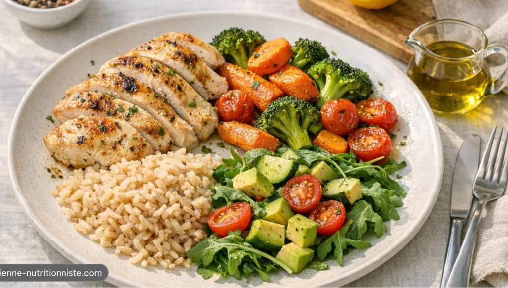

🔥 한 끼 칼로리
0%
0 / 450 kcal
🍗 단백질 (Protein)
0%
0 / 35 g
🍠 탄수화물 (Carbs)
0%
0 / 45 g
🥑 건강한 지방 (Fat)
0%
0 / 12 g
🍽️ 현재 담긴 식재료:
아래 카드에서 원하는 원재료를 클릭해 담아보세요.

🍱 퇴근 후 3분 도시락 루틴 (귀차니즘 제로 밀프랩)
초현실주의 직장인 식단
🌙 저녁 퇴근 후 2분: 도시락통에 툭툭 담기 ➔ ☀️ 다음 날 점심 3분: 전자레인지 돌리면 양배추 스팀 찜 & 단백질·고구마 촉촉 해동 완성!
⚡ 1초 원클릭 프리셋: